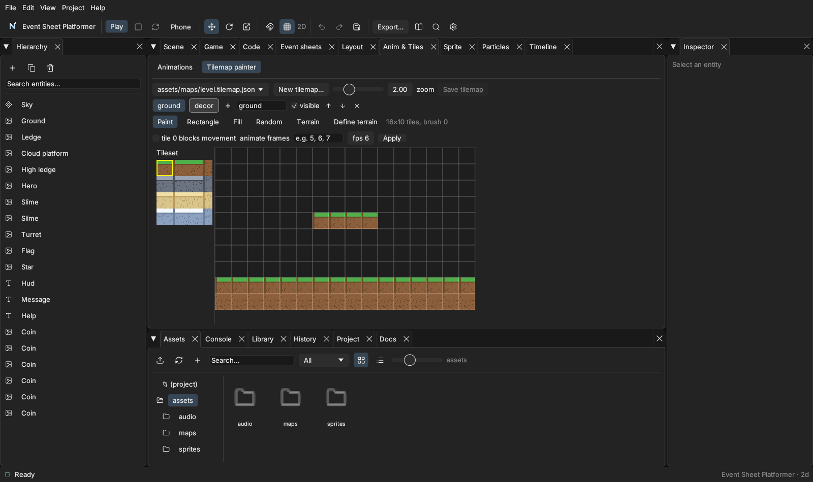

23 · Tilemaps and level design
Goal: build a level with a tile painter instead of placing hundreds of platform objects.
Paint it#
- A tileset PNG (a grid of equal tiles, for example 16×16) in
assets/. - Anim & Tiles ▸ Tilemaps ▸ New tilemap…, pick the tileset, paint with Paint / Rectangle / Fill / Random / Terrain brushes (auto-tiling picks the right edge tile). Save:
assets/maps/level1.json.

- Make an object with a
tilemapcomponent:map= the map file,tileset= the PNG. Tick collides (or list the solid tile ids in the map) and the player stands on those tiles. Unity: Tilemap + Tilemap Collider 2D.
Layers: use separate layers for background, ground and decoration; the collides setting can apply to one layer (collideLayer).
Place objects with the level editor#
For enemies, coins, doors and spawn points the 2D Level tab lets you paint objects onto the same map with snapping, and play-test from there (see 2D Level Creator). Rooms of a platformer or dungeon can be saved as scenes.
Level data in code#
Procedural levels are just spawn calls:
File: scripts/Level.js (inside async Start(); rows is the map as text)
const rows = [
'..........',
'....c.....',
'.######...',
];
const size = 32;
for (let y = 0; y < rows.length; y++) for (let x = 0; x < rows[y].length; x++) {
const pos = [x * size + 16, y * size + 16, 0];
if (rows[y][x] === '#') this.scene.spawn('prefabs/block.prefab.json', { pos });
if (rows[y][x] === 'c') this.scene.spawn('prefabs/coin.prefab.json', { pos });
}(Fine for hundreds of objects; use the tilemap component for thousands.)
Several levels#
File: scripts/Progress.js (a constant at the top of the file and a method that loads the next level)
const LEVELS = ['scenes/level1.scene.json', 'scenes/level2.scene.json', 'scenes/level3.scene.json'];
const next = (this.save.get('level', 0) + 1) % LEVELS.length;
this.save.set('level', next);
await this.game.loadScene(LEVELS[next]);Keep the player, GameManager and HUD in a persistent setup (Scenes) or put them in every level scene.
Checking tiles#
this.physics.overlapBox(x, y, w, h) includes { tile: true } markers where a solid tile is, handy for "is there ground ahead?" checks for patrolling enemies:
File: your script, for example scripts/Walker.js (inside fixedUpdate())
const ahead = this.physics.overlapBox(this.entity.pos[0] + 20 * this.dir, this.entity.pos[1] + 24, 8, 8);
if (!ahead.some((h) => h.tile || h.hasTag?.('solid'))) this.dir = -this.dir; // turn around at ledgesTiled files#
Maps made in the Tiled editor (.json) work too: set tilesetName to the name used inside Tiled.